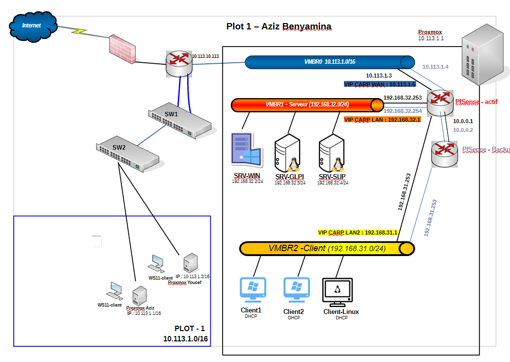

Aziz Benyamina
Titulaire d'un BTS SIO SISR, en Licence Réseaux & Cybersécurité au CNAM. Je recherche une alternance en administration systèmes et réseaux.
|
À propos
Titulaire d'un BTS SIO SISR, j'ai déployé et configuré un parc de plus de 300 postes en milieu hospitalier et assuré un support utilisateur N1/N2. Rigoureux, autonome et bilingue (anglais C1), je recherche une alternance en administration systèmes et réseaux.
# Compétences Techniques
Ma Formation
Parcours scolaire et diplômes obtenus
Licence Informatique
Réseaux & Cybersécurité
Approfondissement en administration réseau, sécurité des SI et cloud computing.
CNAM, Paris
Alternance : 3 sem. entreprise / 2 sem. école
BTS SIO
Option SISR
Solutions d'Infrastructure, Systèmes et Réseaux
Lycée Turgot, Paris
- Administration Windows/Linux
- Virtualisation & Cloud
- Cybersécurité & Réseau
Bac Pro SN
Option RISC — Mention Bien
Réseaux Informatiques et Systèmes Communicants
Lycée Paul Bert, Maisons-Alfort
- Installation & Maintenance Réseau
- Câblage & Infrastructure
- Électronique & Systèmes Embarqués
Technologies & Outils Maîtrisés
Systèmes, réseaux, sécurité et gestion de parc informatique
Expertise Infrastructure & Sécurité
Domaines de spécialisation technique SISR
Virtualisation & Cloud
- Déploiement et gestion d'hyperviseur Proxmox VE
- Administration de machines virtuelles KVM/QEMU
- Orchestration de conteneurs avec Kubernetes (K3s)
- Gestion du stockage distribué et snapshots
Sécurité Périmetrique
- Configuration pare-feu pfSense avec filtrage avancé
- Mise en place de VPN WireGuard sécurisé
- Segmentation réseau par VLANs
- Règles NAT et limitation de bande passante
Services Réseau Critiques
- Déploiement Active Directory DS multi-sites
- Configuration DNS avec zones redondantes
- Gestion DHCP avec haute disponibilité
- Stratégies de groupe (GPO) et réplication AD
Mon Homelab
Infrastructure personnelle haute disponibilité — Proxmox VE

Proxmox VE + VLANs + pfSense HA (CARP) + Windows Server AD + GLPI + HAProxy
Cluster Haute Disponibilité pfSense
CARP + HAProxy — Publication de services
Architecture en Haute Disponibilité de type actif/passif éliminant le SPOF (Single Point of Failure) pour garantir la continuité des services.
- Installation de deux instances pfSense sur Proxmox VE
- Protocole CARP — VIP :
10.113.1.5et192.168.32.1 - Segmentation par VLANs, Reverse Proxy HAProxy
- Services web/mail sécurisés
- Tests de failover validés — basculement automatique
Active Directory & Déploiement GLPI
GPO + Inventaire automatisé
Gestion Active Directory complète avec déploiement automatisé de l'agent d'inventaire GLPI via GPO sur l'ensemble du parc.
- Forêt Active Directory DS multi-sites
- GPO de déploiement logiciel (MSI) — Agent GLPI
- Configuration DNS & DHCP haute disponibilité
- Inventaire centralisé et ticketing GLPI
Projets
Mail & Site Clinique
Serveur de messagerie (Postfix/Dovecot/Roundcube) + Site vitrine WordPress sous Debian.
Mairie Maisons-Alfortville
Infrastructure réseau pour la mairie - conception et déploiement avec Packet Tracer.
Supervision GLPI
Mise en place de GLPI pour la gestion de parc et suivi des tickets incidents.
Devine le Nombre
Mini-projet web interactif (HTML/CSS/JavaScript) — jeu de devinette avec logique algorithmique côté client, déployé sur serveur Apache.


Expériences Professionnelles

Stagiaire Admin & Cybersécurité
J&A Business Consulting
Cabinet de conseil spécialisé dans la transformation digitale, le management stratégique et le développement de solutions technologiques sur-mesure.
Missions Principales
Plateforme Auth Kubernetes
Sécurisation serveur avec K3s & Sealed Secrets
Compétences acquises :

Technicien Support & Déploiement
Hôpital Européen de Paris
Déploiement à grande échelle de plus de 300 postes (OS, logiciels métiers, périphériques), support N1/N2 via GLPI, brassage réseau et conformité sécurité.
Veille Technologique
Méthodologie, Outils et Analyse.
L'Impact de l'IA sur la Cybersécurité
Thème 2024-2025
Analyse du Sujet
Nouvelles Menaces
L'IA permet aux attaquants de générer des campagnes de phishing ultra-personnalisées et crédibles à grande échelle. Les malwares "polymorphes" générés par IA modifient leur code en temps réel pour échapper aux antivirus classiques.
Défense Intelligente
En réponse, les SOC (Security Operations Centers) intègrent le Machine Learning pour détecter les anomalies comportementales sur le réseau (UEBA) plus rapidement qu'un humain ne pourrait le faire.
Méthodologie
J'utilise un agrégateur de flux RSS pour centraliser l'information et gagner du temps.
Sources Principales
Analyse Prospective 2025-2026
L’Évolution du Paradigme de la Cybersécurité à l’Ère de l’IA. De l'automatisation de l'attaque vers le SOC Autonome.
Vélocité d'Attaque
Breakout Time
Chute du Breakout Time
En 2025, le temps moyen mis par un adversaire pour se déplacer latéralement (breakout time) a chuté à 29 minutes (contre 62 min en 2024), soit une accélération de 65% grâce à l'IA.
Living Off the AI Land
82% des détections "malware-free" utilisent des IA internes d'entreprise comme outils pour extraire des secrets ou comprendre le réseau, échappant aux détections classiques.
Déception Synthétique
Deepfakes & Polymorphisme
Deepfakes & Ingénierie
Une fraude BEC record a coûté 25 millions $ à Hong Kong avec une visio où tous les participants étaient des clones. 51% du spam actuel est écrit par IA (phishing sans erreur multilingue).
Malwares IA & IDPI
Des prototypes comme Promptflux utilisent Gemini pour réécrire leur propre payload toutes les heures, échappant à 100% à l'EDR. Risque majeur d'injections de requêtes indirectes (IDPI).
Riposte Défensive
SOC Autonome & Agentique
L'Agentic SOC
Les LLMs réduisent de 88% le temps d'investigation. L'IA triage les alertes, génère des synthèses en langage naturel et orchestre les playbooks SOAR (neutralisation en millisecondes).
Souveraineté (IA Act)
Face à l'automatisation offensive, l'UE impose l'IA Act et le CRA (Cyber Resilience Act 2026), exigeant la souveraineté par conception et une robuste sécurité des modèles.